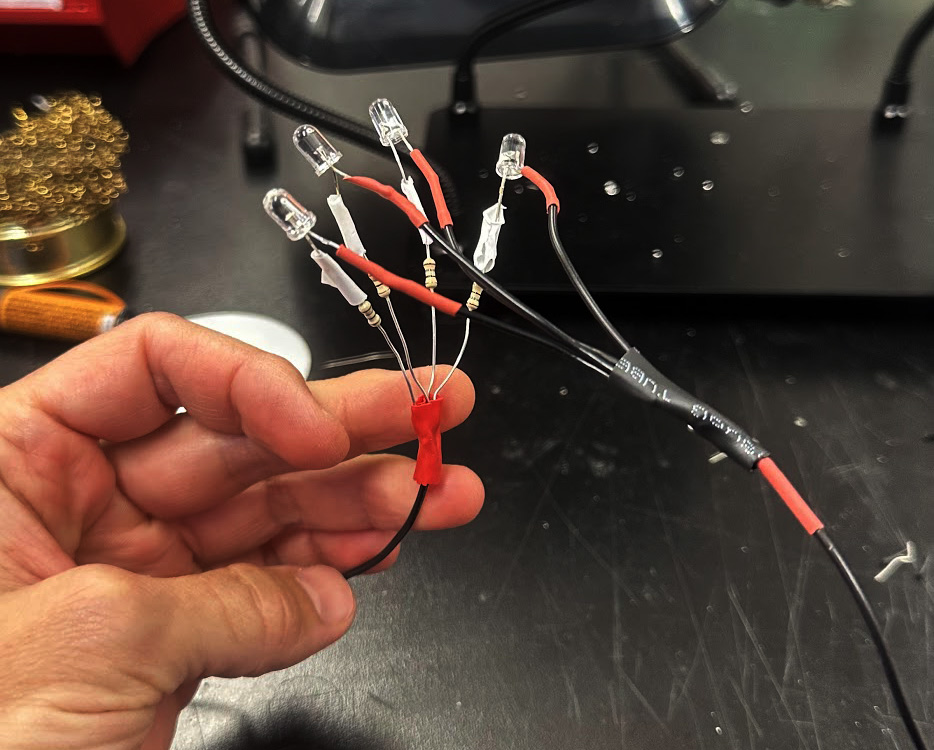
This week featured a staggering series of undiagnosable failures. Here is an absurdly simple circuit that I spent four (4!) hours trying -- unsuccessfully -- to get to work.
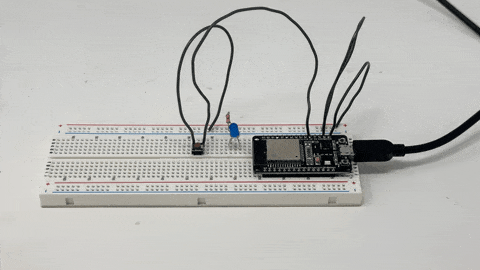
Behold my submission to this week's assignment: a non-functional button.
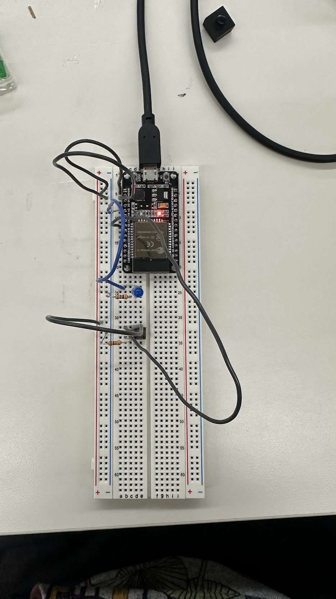
I used the arduino reference manual, PS70 wesbite, gpt, and extensive googling to try and figure out why my serial monitor was either receiving only garbarge signals, or zeros.
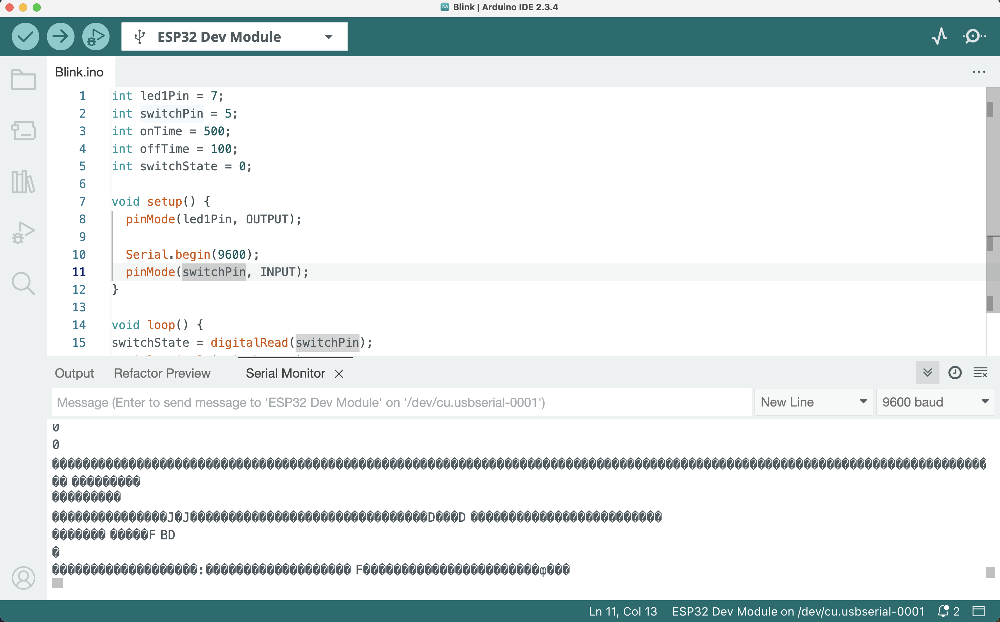
My code:
#define switchPin 4 // I also tried 5, 14, and 15
void setup() {
Serial.begin(115200);
pinMode(switchPin, INPUT_PULLUP); // I also tried using a PULLDOWN with a 10k ohm resistor
}
void loop() {
int state = digitalRead(switchPin);
Serial.println(state);
delay(200); // So many garbage values were flooding the terminal so I introduced this delay
}
Unfortunately, literally all I could figure out how to get this thing to do was turn on a green LED using the always-on power supply.
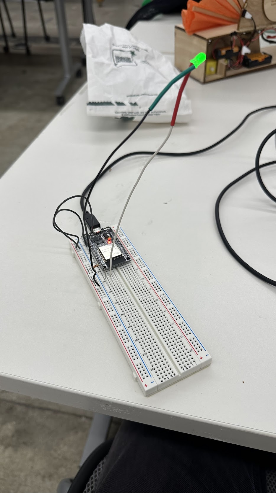
Hardware is hard.
I tried to do something simple next - just get 4 LEDs to work in a circuit.
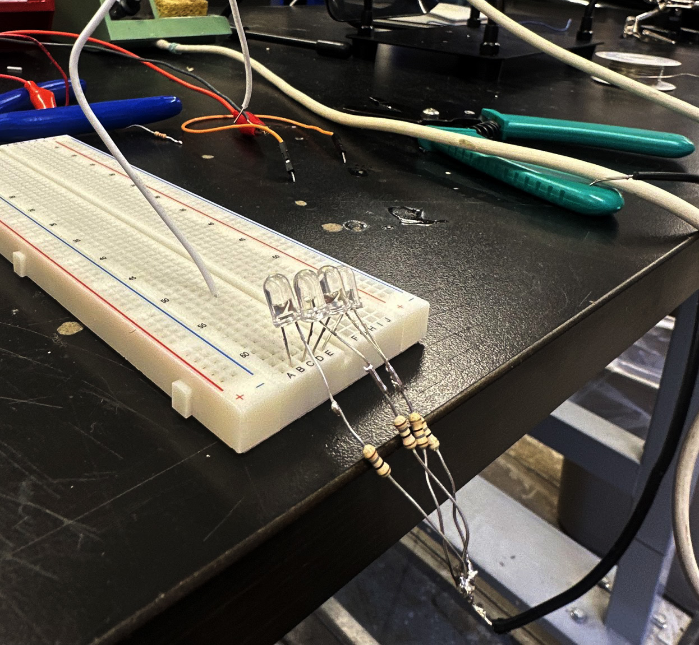
This actually worked! Notice how there was no microcontroller to make things difficult.
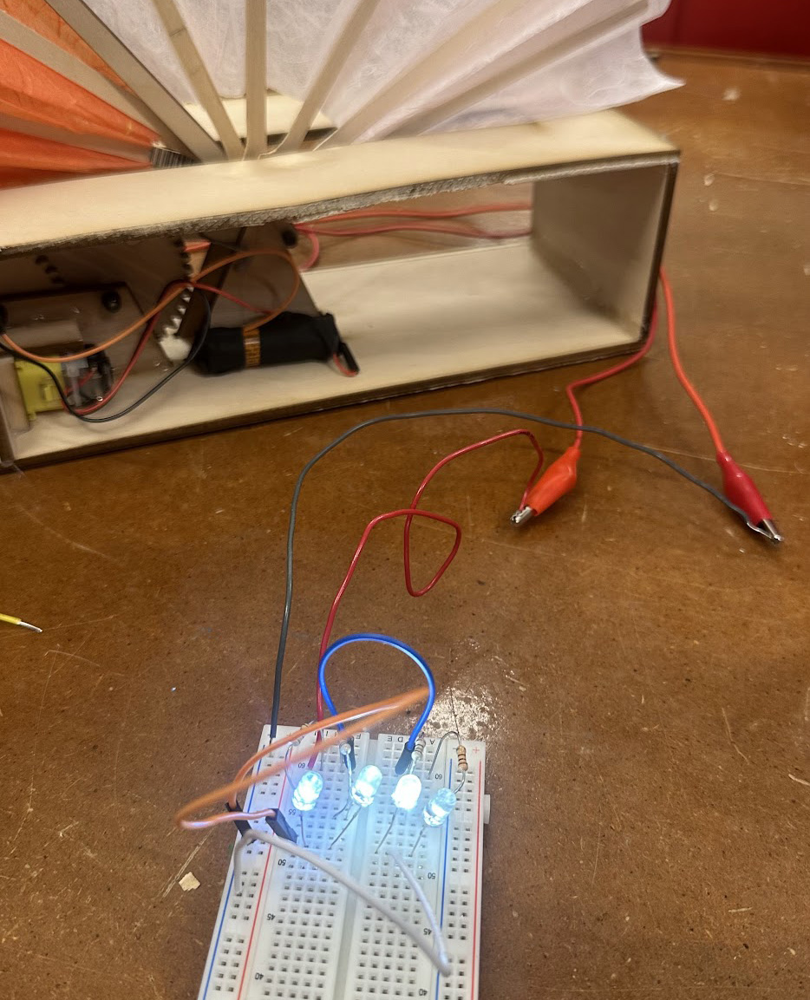
Given that my electronics were such a staggering fail, I decided to practice a core skill that would be useful in future projects -- soldering.
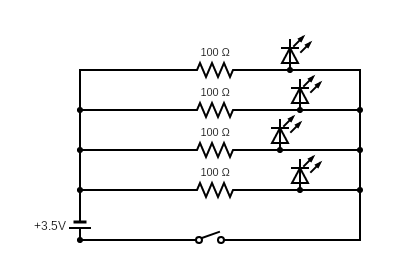
I made a 4-LED array of white lights, wired in parallel, each with its own resistor attached to it.
And I used this to upgrade my lamp from last week, wiring it with switches for both the lights and fan mechanism so that both can be turned on independently.
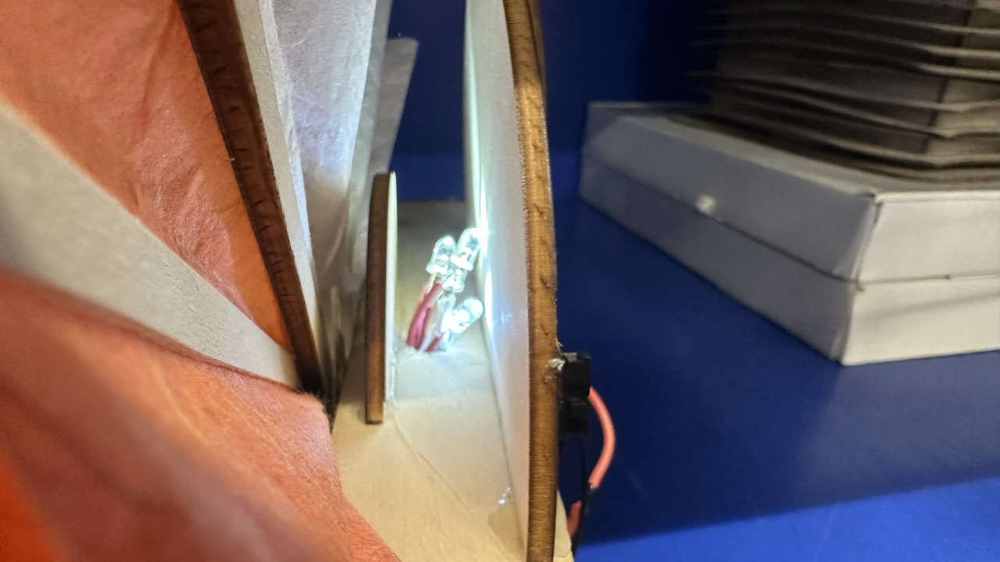
Then I upgraded all of the components, including designing and lasering a new gear for the quieter motor, and soldering everything together.
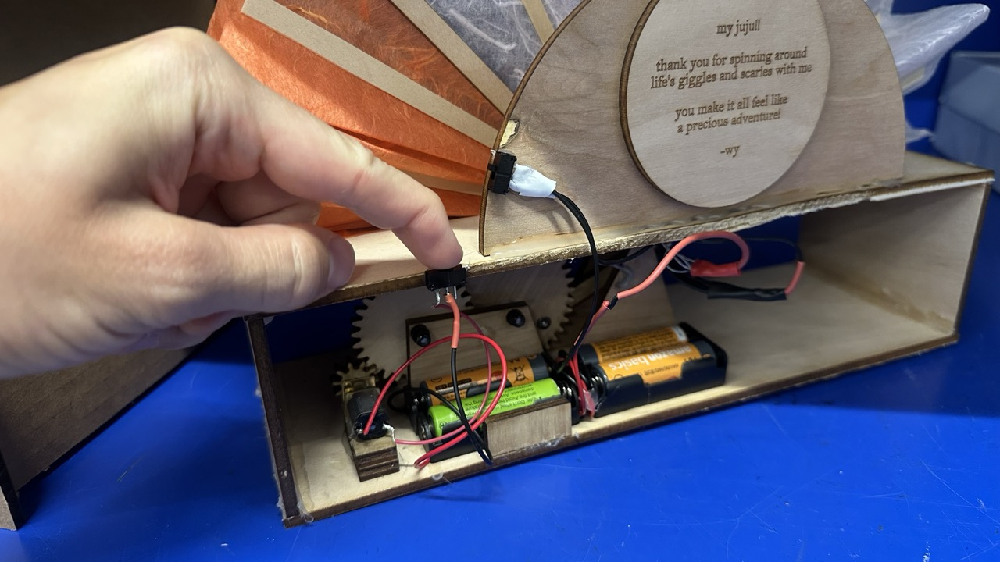
This week was rough. Microcontrollers are so fickle -- it was unclear what was going wrong, and even more frustrating, it was unclear how to diagnose what might be going wrong -- especially when the issues may be physical, or may be a busted board, or a loose wire. After you try 100 different things and none work, it may be time to take a breath (or get a new esp32).
Kassia gave me a different ESP32 which actually works.
Joey helped me figure out how to get it set up in the Arduino IDE.
Bobby assured me that bad days happen. And so do good days. And gave me a solid dap.
And now... IT WORKS!
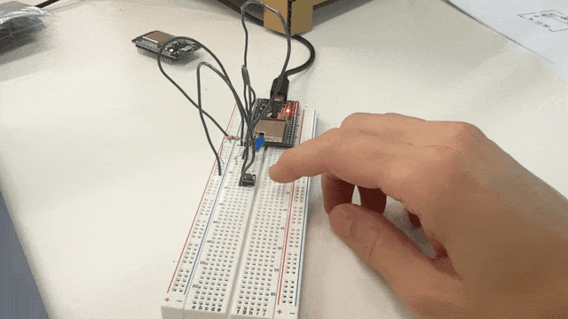
My most important learning today: working alone is best done with a base level competency. Learning alone is brutal. Huge shoutout to this class and teaching staff for all of the support. You make making fun.